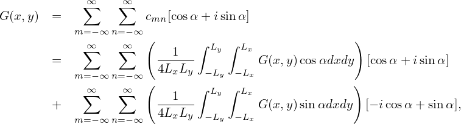

Compared with Eq. (1) that uses the trigonometric functions, Fourier series (15) and (16), which is expressed in terms of the complex exponential function einπx∕L, is more compact. The convenience introduced by the complex exponential function is more obvious when we deal with multiple-dimensional cases. For example, a two-dimensional function G(x,y) can be expanded as Fourier series about x,
|
| (123) |
where 2Lx is the period of G in x direction. The expansion coefficients cm(y) can be further expanded as Fourier series about y,
 | (124) |
where 2Ly is the period of G in y direction, and the coefficients cmn is given by
Using Eq. (124) in Eq. (123), we obtain
 | (126) |
Equations (126) and (125) give the two-dimensional Fourier series of G(x,y).
The formula for expanding a real-valued two-dimensional function G(x,y) in
terms of basis functions cos and sin can be readily
recovered from Eqs. (126) and (125). For notation ease, define
can be readily
recovered from Eqs. (126) and (125). For notation ease, define
|
| (127) |
Then Eq. (126) is written as
![∑∞ ∞∑
G(x,y) = cmn [cosα + isinα ]
m= −∞ n= −∞
∑∞ ∞∑ ( 1 ∫ Ly ∫ Lx )
= ------ G (x,y)cos αdxdy [cosα + isinα]
m= −∞ n= −∞ (4LxLy − Ly −Lx )
∑∞ ∞∑ 1 ∫ Ly ∫ Lx
+ 4L--L- G (x,y)sinαdxdy [− icosα + sin α],
m= −∞ n= −∞ x y − Ly −Lx](fourier_analysis137x.png)
![1 ∫ Ly [ 1 ∫ Lx ]
cmn = ---- ---- G(x,y)e− im πx∕Lxdx e−inπy∕Lydy.
2Ly −Ly 2Lx −Lx
--1---∫ Ly∫ Lx −im πx∕Lx−inπy∕Ly
= 4LxLy −L − L G(x,y)e dxdy. (125)
y x](fourier_analysis132x.png)